Italy
Lamborghini
Tractor maker Ferruccio Lamborghini founded his car company in 1963 to compete with Ferrari. The Miura and the Countach defined what a supercar should look like.
- Founded
- 1963
- Models
- 31
- Generations
- 29
- In production
- 4
- generations
- Photos
- 29
Range
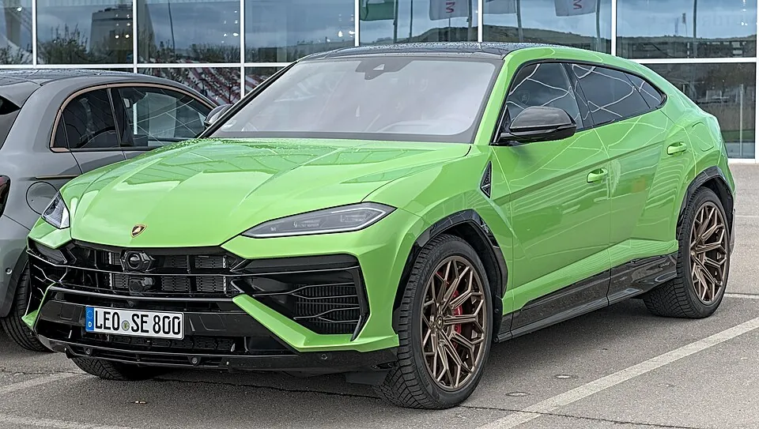
Recent past


Heritage


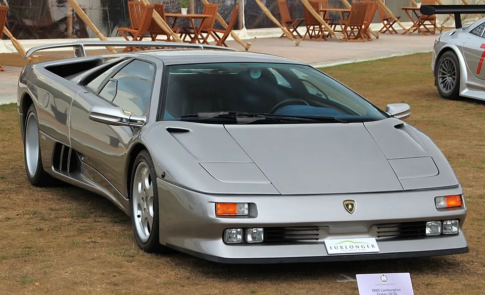
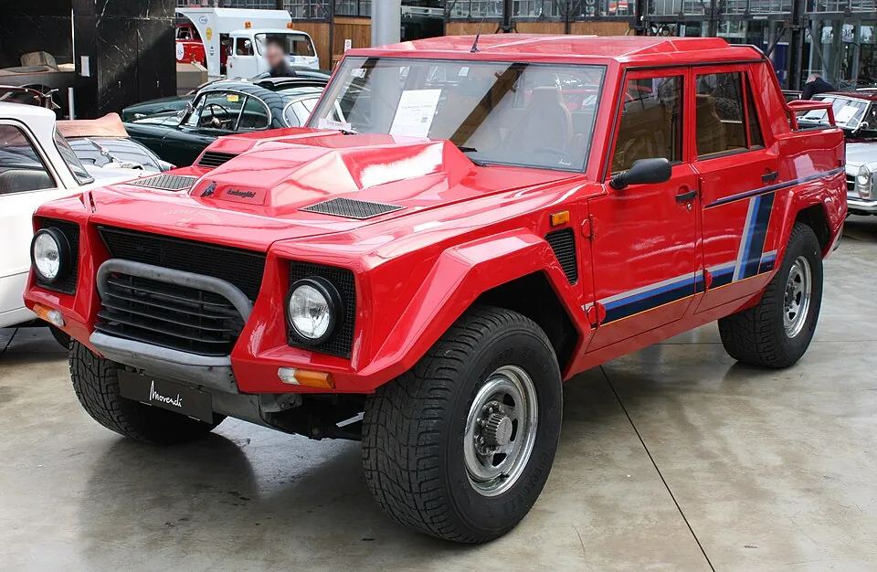
Lamborghini LM002
A V12 off-roader from the 1980s, nicknamed the "Rambo Lambo".
All models and generations
29 models, each with all its generations.
In production
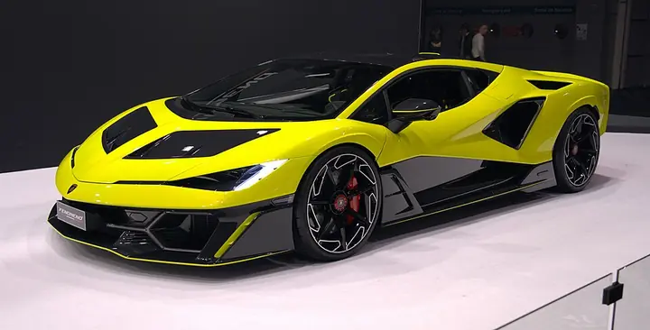
Lamborghini Fenomeno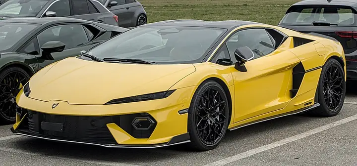
Lamborghini Temerario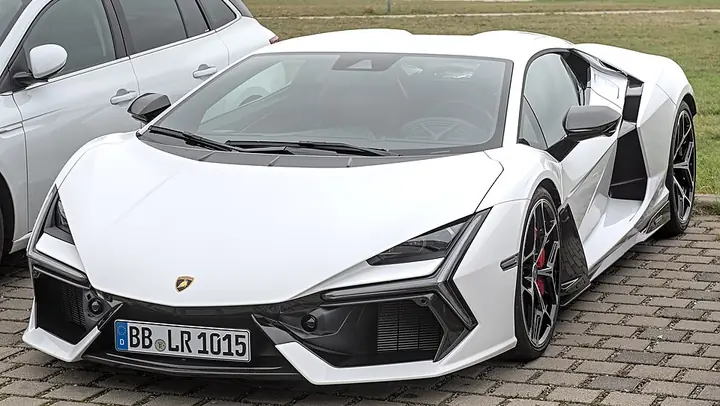
Lamborghini Revuelto Lamborghini Urus
Lamborghini Urus
Past models
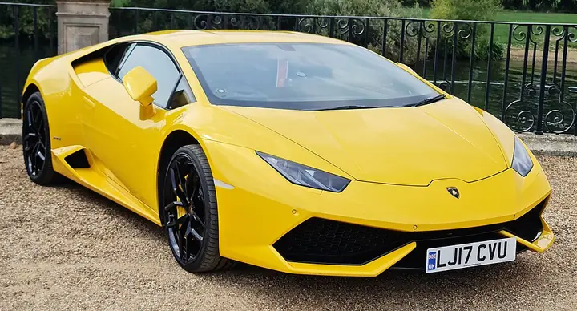
Lamborghini Huracán Lamborghini Aventador
Lamborghini Aventador Lamborghini Countach LPI 800-4
Lamborghini Countach LPI 800-4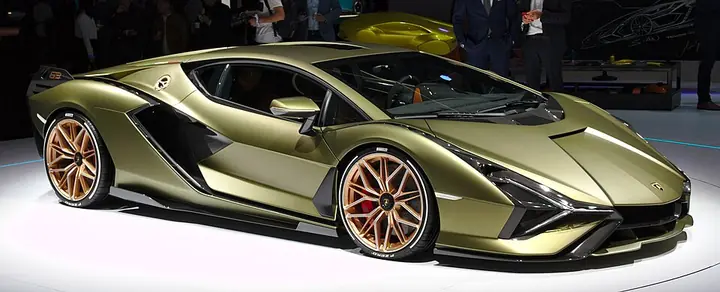
Lamborghini Sián FKP 37 Lamborghini Essenza SCV12
Lamborghini Essenza SCV12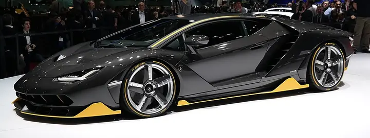
Lamborghini Centenario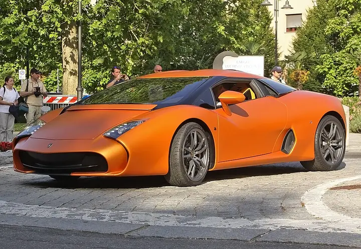
Lamborghini 5-95 Zagato Lamborghini Veneno
Lamborghini Veneno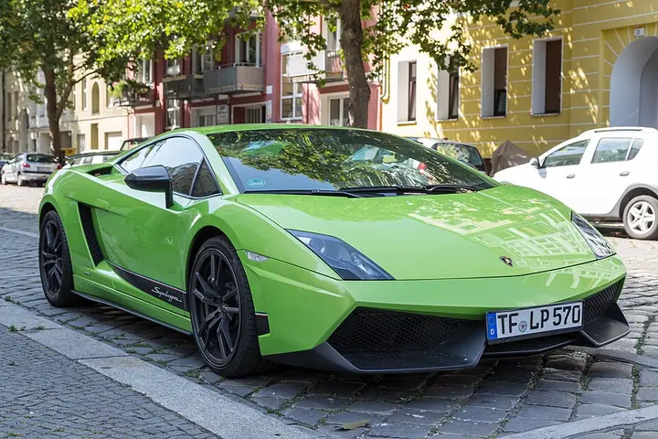
Lamborghini Gallardo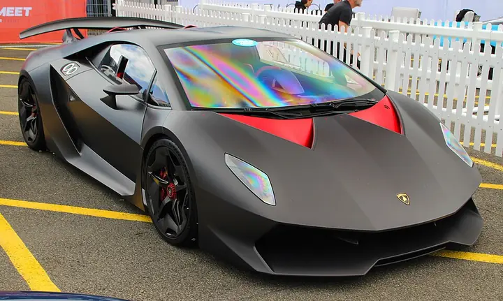
Lamborghini Sesto Elemento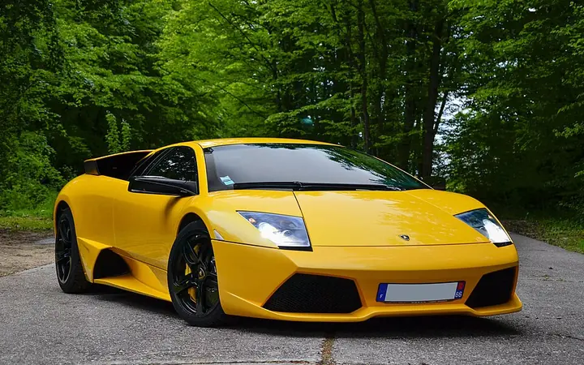
Lamborghini Murciélago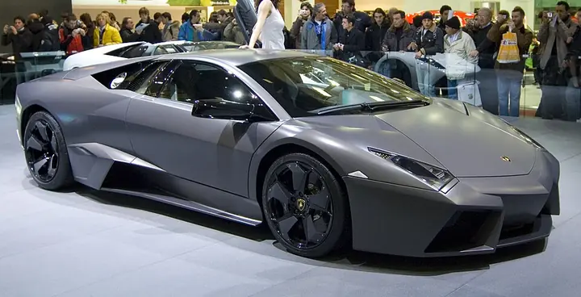
Lamborghini Reventón- Lamborghini Diablo
- Lamborghini LM002
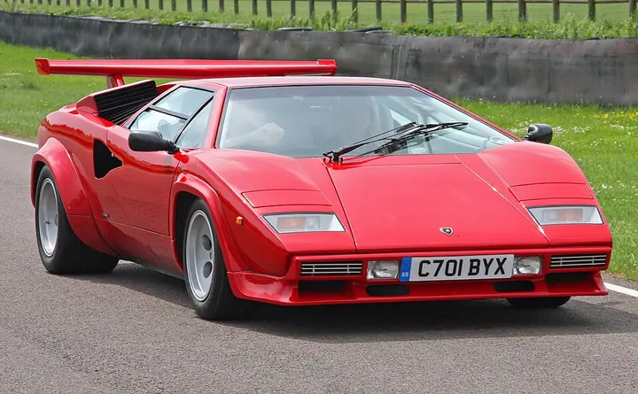
Lamborghini Countach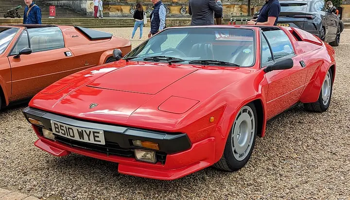
Lamborghini Jalpa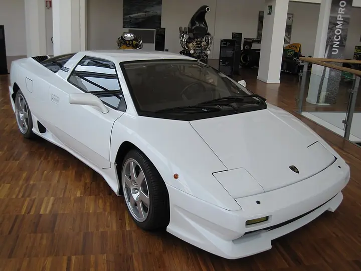
Lamborghini P140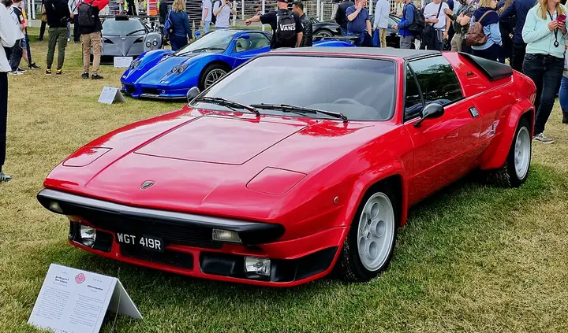
Lamborghini Silhouette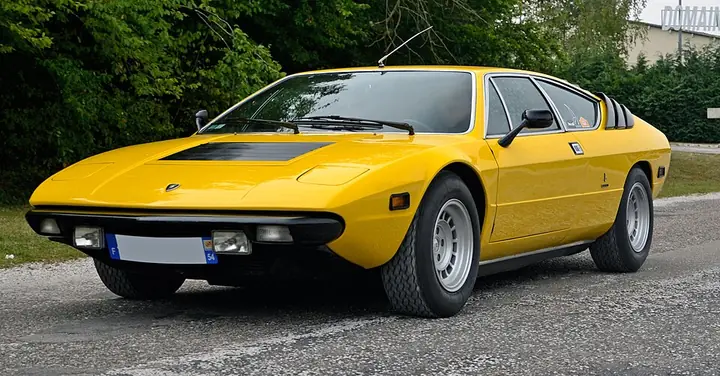
Lamborghini Urraco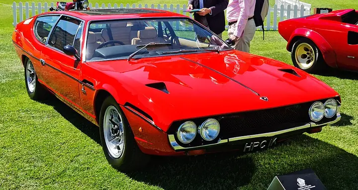
Lamborghini Espada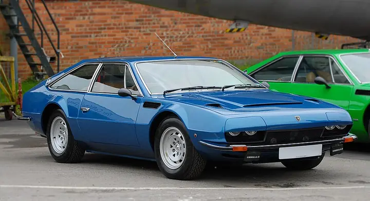
Lamborghini Jarama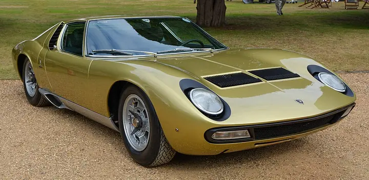
Lamborghini Miura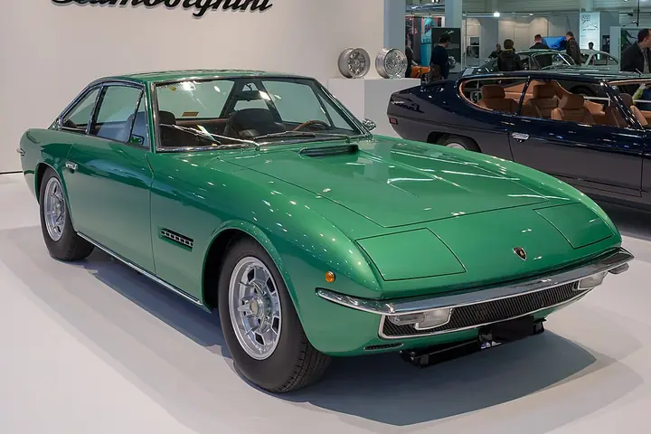
Lamborghini Islero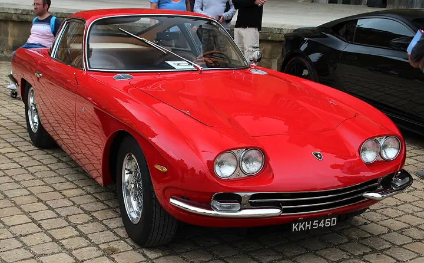
Lamborghini 400 GT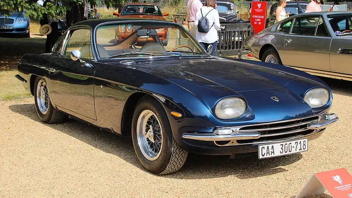
Lamborghini 350 GT
Racing cars
2 racing cars: Formula One, endurance, rally and touring.
Source: Wikipedia, CC BY-SA 4.0.


.jpg){kind=link}


.jpg){kind=link}


_(cropped-2).jpg){kind=link}

.JPG){kind=link}